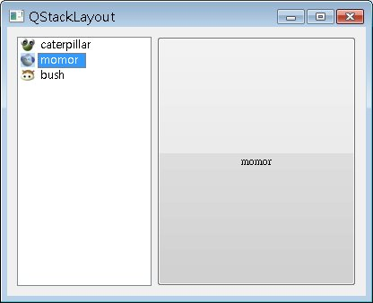

QStackedLayout可以讓您將元件分成一層一層的堆疊，每一層元件有索引，可以指定索引來表示該顯示哪一層的元件，您也可以直接使用QStackedWidget，它繼承自QWidget，內建的版面配置是QStackedLayout。
下面的程式使用QListWidget在視窗左邊提供選項，在視窗右邊使用QStackedLayout放置三層元件，使用者在左邊選取右邊要顯示哪一層元件：
#include <QApplication>
#include <QStackedLayout>
#include <QListWidget>
#include <QIcon>
#include <QLabel>
#include <QPushButton>
#include <QTextEdit>
int main(int argc, char *argv[]) {
QApplication app(argc, argv);
QWidget *window = new QWidget;
window->setWindowTitle("QStackLayout");
window->resize(400, 300);
QHBoxLayout *hBoxLayout = new QHBoxLayout;
QListWidget *listWidget = new QListWidget;
listWidget->setFixedWidth(150);
listWidget->insertItem(0, new QListWidgetItem(
QIcon("caterpillar_head.jpg"), "caterpillar"));
listWidget->insertItem(1, new QListWidgetItem(
QIcon("momor_head.jpg"), "momor"));
listWidget->insertItem(2, new QListWidgetItem(
QIcon("bush_head.jpg"), "bush"));
hBoxLayout->addWidget(listWidget);
QStackedLayout *stackedLayout = new QStackedLayout;
hBoxLayout->addLayout(stackedLayout);
stackedLayout->addWidget(
new QLabel("<h1><font color=blue>caterpillar</font></h1>"));
stackedLayout->addWidget(new QPushButton("momor"));
stackedLayout->addWidget(new QTextEdit);
QObject::connect(listWidget, SIGNAL(currentRowChanged(int)),
stackedLayout, SLOT(setCurrentIndex(int)));
window->setLayout(hBoxLayout);
window->show();
return app.exec();
}
程式中將QListWidget的currentRowChanged() Signal連接至setCurrentIndex() Slot，currentRowChanged()會傳送目前選取的選項索引，setCurrentIndex()根據所傳送的索引值設定目前QStackedLayout要顯示哪一層元件。
程式執行時的畫面如下所示：

|
|